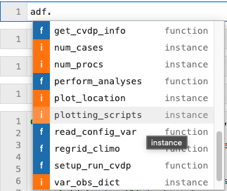

ADF in Jupyter
Contents
ADF in Jupyter#
Now that we have seen how to run the ADF via terminal, let’s take a look at how to run the ADF through Jupyter.
Why Jupyter?#
If you are looking to use the ADF in a more developmental or interactive way, using Jupyter will offer a lot more flexibility than running through the terminal.
One major advantage of this way fo running the ADF will allow the user to immediately have access to output data in a Jupyter notebook which can allow for further development or use of diagnostics that aren’t in the ADF by defualt.
One scenario to highlight tthis flexibility could be for tuning specific parameters of your model run that need a specifi diagnostics set of tools that maybe only good for this tune. Now the user can build custom diagnostics code within the same Jupyter notebook that the ADF was run in!
Let’s take a quick look at an example:
Step 1: Run ADF#
This will simulate running the ADF in the terminal, so nothing will be different here. In order to run the ADF, any of the NPL conda environments will suffice in Jupyter. NCAR has a couple to choose from (as of this tutorial):
NPL 2023a
NPL 2023b
If you need help with navigating Jupyter Nobeooks or NCAR’s JupyterHub, please see the reference section of this tutorial.
Step 2: Analyze ADF Output#
Once the ADF has completed (either here in Jupyter or previously from terminal run) we can use the adf object to gain access to everything available in the ADF. This could be very useful if you want to develop diagsnostics separate from the ADF in a Jupyter Notebook
Using the download attribute of a tag to create file download button using JavaScript.
Click the below button to download this Jupyter Notebook
%matplotlib inline
import os.path
from pathlib import Path
import sys
# Determine ADF directory path
# If it is in your cwd, set adf_path = local_path,
# otherwise set adf_path appropriately
local_path = os.path.abspath('')
#adf_path = "/glade/work/{user}/ADF" # <-- uncomment and use your username
adf_path = "/glade/work/richling/ADF/ADF/" # <-- then comment out
print(f"current working directory = {local_path}")
print(f"ADF path = {adf_path}")
current working directory = /glade/work/richling/ADF/adf-demo/notebooks/basic_examples
ADF path = /glade/work/richling/ADF/ADF/
#set path to ADF lib
lib_path = os.path.join(adf_path,"lib")
print(f"The lib scripts live here, right? {lib_path}")
#set path to ADF plotting scripts directory
plotting_scripts_path = os.path.join(adf_path,"scripts","plotting")
print(f"The plotting scripts live here, right? {plotting_scripts_path}")
#Add paths to python path:
sys.path.append(lib_path)
sys.path.append(plotting_scripts_path)
The lib scripts live here, right? /glade/work/richling/ADF/ADF/lib
The plotting scripts live here, right? /glade/work/richling/ADF/ADF/scripts/plotting
#import ADF diagnostics object
from adf_diag import AdfDiag
# If this fails, check your paths output in the cells above,
# and that you are running the NPL (conda) Kernel
# You can see all the paths being examined by un-commenting the following:
#sys.path
Single CAM vs CAM case#
# Set path for config YAML file
#config_path = "/path/to/your/yaml/file/"
config_path = "/glade/work/richling/ADF/adf-demo/config_files/"
# Set name of config YAML file:
config_fil_str = "config_single_model_vs_model.yaml"
# Make full path to config file
config_file=os.path.join(config_path,config_fil_str)
#Initialize ADF object with config file
adf = AdfDiag(config_file)
adf
<adf_diag.AdfDiag at 0x14a97c1a2a00>
The following functions are what get called under the hood when the ADF is run through the terminal
Create Time Series Files#
Create model time series
%%time
adf.create_time_series()
Output:
Generating CAM time series files...
Processing time series for case 'f.cam6_3_106.FLTHIST_v0a.ne30.dcs_effgw_rdg.001' :
- time series for CLDHGH
- time series for CLDICE
Adding PS to file
- time series for CLDLIQ
Adding PS to file
- time series for CLDLOW
- time series for CLDMED
- time series for CLDTOT
- time series for CLOUD
Adding PS to file
- time series for FLNS
- time series for FLNT
- time series for FLNTC
- time series for FSNS
- time series for FSNT
- time series for FSNTC
- time series for LHFLX
- time series for LWCF
- time series for OMEGA500
- time series for PBLH
- time series for PRECL
- time series for PRECT
- time series for PRECSL
- time series for PRECSC
- time series for PRECSC
- time series for PRECC
- time series for PS
- time series for PSL
- time series for QFLX
- time series for Q
Adding PS to file
- time series for RELHUM
Adding PS to file
- time series for SHFLX
- time series for SST
- time series for SWCF
- time series for T
Adding PS to file
- time series for TAUX
- time series for TAUY
- time series for TGCLDIWP
- time series for TGCLDLWP
- time series for TMQ
- time series for TREFHT
- time series for TS
- time series for U
Adding PS to file
- time series for U10
- time series for ICEFRAC
- time series for OCNFRAC
- time series for LANDFRAC
...CAM time series file generation has finished successfully.
CPU times: user 256 ms, sys: 40.5 ms, total: 297 ms
Wall time: 1min 5s
%%time
#Create model baseline time series (if needed):
# Since we are doing model vs model
if not adf.compare_obs:
adf.create_time_series(baseline=True)
Output:
Generating CAM time series files...
Processing time series for case 'f.cam6_3_106.FLTHIST_v0a.ne30.dcs_non-ogw.001' :
- time series for CLDHGH
- time series for CLDICE
Adding PS to file
- time series for CLDLIQ
Adding PS to file
- time series for CLDLOW
- time series for CLDMED
- time series for CLDTOT
- time series for CLOUD
Adding PS to file
- time series for FLNS
- time series for FLNT
- time series for FLNTC
- time series for FSNS
- time series for FSNT
- time series for FSNTC
- time series for LHFLX
- time series for LWCF
- time series for OMEGA500
- time series for PBLH
- time series for PRECL
- time series for PRECT
- time series for PRECSL
- time series for PRECSC
- time series for PRECSC
- time series for PRECC
- time series for PS
- time series for PSL
- time series for QFLX
- time series for Q
Adding PS to file
- time series for RELHUM
Adding PS to file
- time series for SHFLX
- time series for SST
- time series for SWCF
- time series for T
Adding PS to file
- time series for TAUX
- time series for TAUY
- time series for TGCLDIWP
- time series for TGCLDLWP
- time series for TMQ
- time series for TREFHT
- time series for TS
- time series for U
Adding PS to file
- time series for U10
- time series for ICEFRAC
- time series for OCNFRAC
- time series for LANDFRAC
...CAM time series file generation has finished successfully.
CPU times: user 180 ms, sys: 141 ms, total: 321 ms
Wall time: 1min 6s
Create Climo Files#
This will run the creation of both test and baseline cases
%%time
#Create model climatology (climo) files.
adf.create_climo()
Output:
Calculating CAM climatologies...
Calculating climatologies for case 'f.cam6_3_106.FLTHIST_v0a.ne30.dcs_effgw_rdg.001' :
/glade/scratch/richling/ADF/adf_tutorial/data/climo/f.cam6_3_106.FLTHIST_v0a.ne30.dcs_effgw_rdg.001 not found, making new directory
Calculating climatologies for case 'f.cam6_3_106.FLTHIST_v0a.ne30.dcs_non-ogw.001' :
/glade/scratch/richling/ADF/adf_tutorial/data/climo/f.cam6_3_106.FLTHIST_v0a.ne30.dcs_non-ogw.001 not found, making new directory
...CAM climatologies have been calculated successfully.
CPU times: user 226 ms, sys: 307 ms, total: 533 ms
Wall time: 5min 13s
Regrdding Climo Files#
Regrid model climatology files to match either observations or CAM baseline climatologies.
This call uses the regridding_scripts specified in the run-time config file
%%time
adf.regrid_climo()
Output:
Regridding CAM climatologies...
/glade/scratch/richling/ADF/adf_tutorial/data/regrid not found, making new directory
Regridding case 'f.cam6_3_106.FLTHIST_v0a.ne30.dcs_effgw_rdg.001' :
- regridding PS (known targets: ['f.cam6_3_106.FLTHIST_v0a.ne30.dcs_non-ogw.001'])
- regridding LANDFRAC (known targets: ['f.cam6_3_106.FLTHIST_v0a.ne30.dcs_non-ogw.001'])
- regridding OCNFRAC (known targets: ['f.cam6_3_106.FLTHIST_v0a.ne30.dcs_non-ogw.001'])
- regridding CLDHGH (known targets: ['f.cam6_3_106.FLTHIST_v0a.ne30.dcs_non-ogw.001'])
- regridding CLDICE (known targets: ['f.cam6_3_106.FLTHIST_v0a.ne30.dcs_non-ogw.001'])
Please ignore the interpolation warnings that follow!
Interpolation point out of data bounds encountered
Please ignore the interpolation warnings that follow!
Interpolation point out of data bounds encountered
- regridding CLDLIQ (known targets: ['f.cam6_3_106.FLTHIST_v0a.ne30.dcs_non-ogw.001'])
Please ignore the interpolation warnings that follow!
Interpolation point out of data bounds encountered
Please ignore the interpolation warnings that follow!
Interpolation point out of data bounds encountered
- regridding CLDLOW (known targets: ['f.cam6_3_106.FLTHIST_v0a.ne30.dcs_non-ogw.001'])
- regridding CLDMED (known targets: ['f.cam6_3_106.FLTHIST_v0a.ne30.dcs_non-ogw.001'])
- regridding CLDTOT (known targets: ['f.cam6_3_106.FLTHIST_v0a.ne30.dcs_non-ogw.001'])
- regridding CLOUD (known targets: ['f.cam6_3_106.FLTHIST_v0a.ne30.dcs_non-ogw.001'])
Please ignore the interpolation warnings that follow!
Interpolation point out of data bounds encountered
Please ignore the interpolation warnings that follow!
Interpolation point out of data bounds encountered
- regridding FLNS (known targets: ['f.cam6_3_106.FLTHIST_v0a.ne30.dcs_non-ogw.001'])
- regridding FLNT (known targets: ['f.cam6_3_106.FLTHIST_v0a.ne30.dcs_non-ogw.001'])
- regridding FLNTC (known targets: ['f.cam6_3_106.FLTHIST_v0a.ne30.dcs_non-ogw.001'])
- regridding FSNS (known targets: ['f.cam6_3_106.FLTHIST_v0a.ne30.dcs_non-ogw.001'])
- regridding FSNT (known targets: ['f.cam6_3_106.FLTHIST_v0a.ne30.dcs_non-ogw.001'])
- regridding FSNTC (known targets: ['f.cam6_3_106.FLTHIST_v0a.ne30.dcs_non-ogw.001'])
- regridding LHFLX (known targets: ['f.cam6_3_106.FLTHIST_v0a.ne30.dcs_non-ogw.001'])
- regridding LWCF (known targets: ['f.cam6_3_106.FLTHIST_v0a.ne30.dcs_non-ogw.001'])
- regridding OMEGA500 (known targets: ['f.cam6_3_106.FLTHIST_v0a.ne30.dcs_non-ogw.001'])
- regridding PBLH (known targets: ['f.cam6_3_106.FLTHIST_v0a.ne30.dcs_non-ogw.001'])
- regridding PRECL (known targets: ['f.cam6_3_106.FLTHIST_v0a.ne30.dcs_non-ogw.001'])
- regridding PRECT (known targets: ['f.cam6_3_106.FLTHIST_v0a.ne30.dcs_non-ogw.001'])
- regridding PRECSL (known targets: ['f.cam6_3_106.FLTHIST_v0a.ne30.dcs_non-ogw.001'])
- regridding PRECSC (known targets: ['f.cam6_3_106.FLTHIST_v0a.ne30.dcs_non-ogw.001'])
- regridding PRECSC (known targets: ['f.cam6_3_106.FLTHIST_v0a.ne30.dcs_non-ogw.001'])
Regridded file already exists, so skipping...
- regridding PRECC (known targets: ['f.cam6_3_106.FLTHIST_v0a.ne30.dcs_non-ogw.001'])
- regridding PSL (known targets: ['f.cam6_3_106.FLTHIST_v0a.ne30.dcs_non-ogw.001'])
- regridding QFLX (known targets: ['f.cam6_3_106.FLTHIST_v0a.ne30.dcs_non-ogw.001'])
- regridding Q (known targets: ['f.cam6_3_106.FLTHIST_v0a.ne30.dcs_non-ogw.001'])
Please ignore the interpolation warnings that follow!
Interpolation point out of data bounds encountered
Please ignore the interpolation warnings that follow!
Interpolation point out of data bounds encountered
- regridding RELHUM (known targets: ['f.cam6_3_106.FLTHIST_v0a.ne30.dcs_non-ogw.001'])
Please ignore the interpolation warnings that follow!
Interpolation point out of data bounds encountered
Please ignore the interpolation warnings that follow!
Interpolation point out of data bounds encountered
- regridding SHFLX (known targets: ['f.cam6_3_106.FLTHIST_v0a.ne30.dcs_non-ogw.001'])
- regridding SST (known targets: ['f.cam6_3_106.FLTHIST_v0a.ne30.dcs_non-ogw.001'])
- regridding SWCF (known targets: ['f.cam6_3_106.FLTHIST_v0a.ne30.dcs_non-ogw.001'])
- regridding T (known targets: ['f.cam6_3_106.FLTHIST_v0a.ne30.dcs_non-ogw.001'])
Please ignore the interpolation warnings that follow!
Interpolation point out of data bounds encountered
Please ignore the interpolation warnings that follow!
Interpolation point out of data bounds encountered
- regridding TAUX (known targets: ['f.cam6_3_106.FLTHIST_v0a.ne30.dcs_non-ogw.001'])
- regridding TAUY (known targets: ['f.cam6_3_106.FLTHIST_v0a.ne30.dcs_non-ogw.001'])
- regridding TGCLDIWP (known targets: ['f.cam6_3_106.FLTHIST_v0a.ne30.dcs_non-ogw.001'])
- regridding TGCLDLWP (known targets: ['f.cam6_3_106.FLTHIST_v0a.ne30.dcs_non-ogw.001'])
- regridding TMQ (known targets: ['f.cam6_3_106.FLTHIST_v0a.ne30.dcs_non-ogw.001'])
- regridding TREFHT (known targets: ['f.cam6_3_106.FLTHIST_v0a.ne30.dcs_non-ogw.001'])
- regridding TS (known targets: ['f.cam6_3_106.FLTHIST_v0a.ne30.dcs_non-ogw.001'])
- regridding U (known targets: ['f.cam6_3_106.FLTHIST_v0a.ne30.dcs_non-ogw.001'])
Please ignore the interpolation warnings that follow!
Interpolation point out of data bounds encountered
Please ignore the interpolation warnings that follow!
Interpolation point out of data bounds encountered
- regridding U10 (known targets: ['f.cam6_3_106.FLTHIST_v0a.ne30.dcs_non-ogw.001'])
- regridding ICEFRAC (known targets: ['f.cam6_3_106.FLTHIST_v0a.ne30.dcs_non-ogw.001'])
...CAM climatologies have been regridded successfully.
CPU times: user 1min 42s, sys: 9.85 s, total: 1min 52s
Wall time: 2min 11s
Run Analysis Scripts#
Perform analyses on the simulation(s).
This call uses the analysis_scripts specified in the run-time config file
adf.perform_analyses()
Output:
Calculating AMWG variable table...
/glade/scratch/richling/ADF/adf_tutorial/plots/f.cam6_3_106.FLTHIST_v0a.ne30.dcs_effgw_rdg.001_1995_2000_vs_f.cam6_3_106.FLTHIST_v0a.ne30.dcs_non-ogw.001_1995_2000 not found, making new directory
- Variable 'LANDFRAC' being added to table
- Variable 'OCNFRAC' being added to table
- Variable 'CLDHGH' being added to table
- Variable 'CLDICE' being added to table
Variable 'CLDICE' has a vertical dimension, which is currently not supported for the AMWG Table. Skipping...
- Variable 'CLDLIQ' being added to table
Variable 'CLDLIQ' has a vertical dimension, which is currently not supported for the AMWG Table. Skipping...
- Variable 'CLDLOW' being added to table
- Variable 'CLDMED' being added to table
- Variable 'CLDTOT' being added to table
- Variable 'CLOUD' being added to table
Variable 'CLOUD' has a vertical dimension, which is currently not supported for the AMWG Table. Skipping...
- Variable 'FLNS' being added to table
- Variable 'FLNT' being added to table
- Variable 'FLNTC' being added to table
- Variable 'FSNS' being added to table
- Variable 'FSNT' being added to table
- Variable 'FSNTC' being added to table
- Variable 'LHFLX' being added to table
- Variable 'LWCF' being added to table
- Variable 'OMEGA500' being added to table
- Variable 'PBLH' being added to table
- Variable 'PRECL' being added to table
- Variable 'PRECT' being added to table
- Variable 'PRECSL' being added to table
- Variable 'PRECSC' being added to table
- Variable 'PRECSC' being added to table
- Variable 'PRECC' being added to table
- Variable 'PS' being added to table
- Variable 'PSL' being added to table
- Variable 'QFLX' being added to table
- Variable 'Q' being added to table
Variable 'Q' has a vertical dimension, which is currently not supported for the AMWG Table. Skipping...
- Variable 'RELHUM' being added to table
Variable 'RELHUM' has a vertical dimension, which is currently not supported for the AMWG Table. Skipping...
- Variable 'SHFLX' being added to table
- Variable 'SST' being added to table
- Variable 'SWCF' being added to table
- Variable 'T' being added to table
Variable 'T' has a vertical dimension, which is currently not supported for the AMWG Table. Skipping...
- Variable 'TAUX' being added to table
- Variable 'TAUY' being added to table
- Variable 'TGCLDIWP' being added to table
- Variable 'TGCLDLWP' being added to table
- Variable 'TMQ' being added to table
- Variable 'TREFHT' being added to table
- Variable 'TS' being added to table
- Variable 'U' being added to table
Variable 'U' has a vertical dimension, which is currently not supported for the AMWG Table. Skipping...
- Variable 'U10' being added to table
- Variable 'ICEFRAC' being added to table
- Variable 'RESTOM' being added to table
- Variable 'LANDFRAC' being added to table
- Variable 'OCNFRAC' being added to table
- Variable 'CLDHGH' being added to table
- Variable 'CLDICE' being added to table
Variable 'CLDICE' has a vertical dimension, which is currently not supported for the AMWG Table. Skipping...
- Variable 'CLDLIQ' being added to table
Variable 'CLDLIQ' has a vertical dimension, which is currently not supported for the AMWG Table. Skipping...
- Variable 'CLDLOW' being added to table
- Variable 'CLDMED' being added to table
- Variable 'CLDTOT' being added to table
- Variable 'CLOUD' being added to table
Variable 'CLOUD' has a vertical dimension, which is currently not supported for the AMWG Table. Skipping...
- Variable 'FLNS' being added to table
- Variable 'FLNT' being added to table
- Variable 'FLNTC' being added to table
- Variable 'FSNS' being added to table
- Variable 'FSNT' being added to table
- Variable 'FSNTC' being added to table
- Variable 'LHFLX' being added to table
- Variable 'LWCF' being added to table
- Variable 'OMEGA500' being added to table
- Variable 'PBLH' being added to table
- Variable 'PRECL' being added to table
- Variable 'PRECT' being added to table
- Variable 'PRECSL' being added to table
- Variable 'PRECSC' being added to table
- Variable 'PRECSC' being added to table
- Variable 'PRECC' being added to table
- Variable 'PS' being added to table
- Variable 'PSL' being added to table
- Variable 'QFLX' being added to table
- Variable 'Q' being added to table
Variable 'Q' has a vertical dimension, which is currently not supported for the AMWG Table. Skipping...
- Variable 'RELHUM' being added to table
Variable 'RELHUM' has a vertical dimension, which is currently not supported for the AMWG Table. Skipping...
- Variable 'SHFLX' being added to table
- Variable 'SST' being added to table
- Variable 'SWCF' being added to table
- Variable 'T' being added to table
Variable 'T' has a vertical dimension, which is currently not supported for the AMWG Table. Skipping...
- Variable 'TAUX' being added to table
- Variable 'TAUY' being added to table
- Variable 'TGCLDIWP' being added to table
- Variable 'TGCLDLWP' being added to table
- Variable 'TMQ' being added to table
- Variable 'TREFHT' being added to table
- Variable 'TS' being added to table
- Variable 'U' being added to table
Variable 'U' has a vertical dimension, which is currently not supported for the AMWG Table. Skipping...
- Variable 'U10' being added to table
- Variable 'ICEFRAC' being added to table
- Variable 'RESTOM' being added to table
...AMWG variable table has been generated successfully.
Making comparison table...
... Comparison table has been generated successfully
Run Plotting Scripts#
Create plots.
This call uses the plotting_scripts specified in the run-time config file
Attention!
This will take some time so please be patient!
%%time
adf.create_plots()
Output:
Generating lat/lon maps...
NOTE: Plot type is set to png
NOTE: redo_plot is set to False
- lat/lon maps for CLDHGH
- lat/lon maps for CLDICE
- lat/lon maps for CLDLIQ
- lat/lon maps for CLDLOW
- lat/lon maps for CLDMED
- lat/lon maps for CLDTOT
- lat/lon maps for CLOUD
- lat/lon maps for FLNS
- lat/lon maps for FLNT
- lat/lon maps for FLNTC
- lat/lon maps for FSNS
- lat/lon maps for FSNT
- lat/lon maps for FSNTC
- lat/lon maps for LHFLX
- lat/lon maps for LWCF
- lat/lon maps for OMEGA500
- lat/lon maps for PBLH
- lat/lon maps for PRECL
- lat/lon maps for PRECT
- lat/lon maps for PRECSL
- lat/lon maps for PRECSC
- lat/lon maps for PRECSC
- lat/lon maps for PRECC
- lat/lon maps for PS
- lat/lon maps for PSL
- lat/lon maps for QFLX
- lat/lon maps for Q
- lat/lon maps for RELHUM
- lat/lon maps for SHFLX
- lat/lon maps for SST
- lat/lon maps for SWCF
- lat/lon maps for T
- lat/lon maps for TAUX
- lat/lon maps for TAUY
- lat/lon maps for TGCLDIWP
- lat/lon maps for TGCLDLWP
- lat/lon maps for TMQ
- lat/lon maps for TREFHT
- lat/lon maps for TS
- lat/lon maps for U
- lat/lon maps for U10
- lat/lon maps for ICEFRAC
- lat/lon maps for OCNFRAC
- lat/lon maps for LANDFRAC
...lat/lon maps have been generated successfully.
Generating lat/lon vector maps...
NOTE: redo_plot is set to False
- lat/lon vector maps for TAUX,TAUY
Some vectors at source domain corners may not have been transformed correctly
Some vectors at source domain corners may not have been transformed correctly
- lat/lon vector maps for U,V
ERROR: Did not find any oclim_fils. Will try to skip.
INFO: Data Location, dclimo_loc is /glade/scratch/richling/ADF/adf_tutorial/data/regrid
INFO: The glob is: f.cam6_3_106.FLTHIST_v0a.ne30.dcs_non-ogw.001_V_*.nc
...lat/lon vector maps have been generated successfully.
Generating zonal mean plots...
NOTE: Plot type is set to png
NOTE: redo_plot is set to False
- zonal mean plots for CLDHGH
- zonal mean plots for CLDICE
CLDICE has lev dimension.
- zonal mean plots for CLDLIQ
CLDLIQ has lev dimension.
- zonal mean plots for CLDLOW
- zonal mean plots for CLDMED
- zonal mean plots for CLDTOT
- zonal mean plots for CLOUD
CLOUD has lev dimension.
- zonal mean plots for FLNS
- zonal mean plots for FLNT
- zonal mean plots for FLNTC
- zonal mean plots for FSNS
- zonal mean plots for FSNT
- zonal mean plots for FSNTC
- zonal mean plots for LHFLX
- zonal mean plots for LWCF
- zonal mean plots for OMEGA500
- zonal mean plots for PBLH
- zonal mean plots for PRECL
- zonal mean plots for PRECT
- zonal mean plots for PRECSL
- zonal mean plots for PRECSC
- zonal mean plots for PRECSC
- zonal mean plots for PRECC
- zonal mean plots for PS
- zonal mean plots for PSL
- zonal mean plots for QFLX
- zonal mean plots for Q
Q has lev dimension.
- zonal mean plots for RELHUM
RELHUM has lev dimension.
- zonal mean plots for SHFLX
- zonal mean plots for SST
- zonal mean plots for SWCF
- zonal mean plots for T
T has lev dimension.
- zonal mean plots for TAUX
- zonal mean plots for TAUY
- zonal mean plots for TGCLDIWP
- zonal mean plots for TGCLDLWP
- zonal mean plots for TMQ
- zonal mean plots for TREFHT
- zonal mean plots for TS
- zonal mean plots for U
U has lev dimension.
- zonal mean plots for U10
- zonal mean plots for ICEFRAC
- zonal mean plots for OCNFRAC
- zonal mean plots for LANDFRAC
...Zonal mean plots have been generated successfully.
Generating meridional mean plots...
NOTE: Plot type is set to png
NOTE: redo_plot is set to False
- meridional mean plots for CLDHGH
- meridional mean plots for CLDICE
CLDICE has lev dimension.
- meridional mean plots for CLDLIQ
CLDLIQ has lev dimension.
- meridional mean plots for CLDLOW
- meridional mean plots for CLDMED
- meridional mean plots for CLDTOT
- meridional mean plots for CLOUD
CLOUD has lev dimension.
- meridional mean plots for FLNS
- meridional mean plots for FLNT
- meridional mean plots for FLNTC
- meridional mean plots for FSNS
- meridional mean plots for FSNT
- meridional mean plots for FSNTC
- meridional mean plots for LHFLX
- meridional mean plots for LWCF
- meridional mean plots for OMEGA500
- meridional mean plots for PBLH
- meridional mean plots for PRECL
- meridional mean plots for PRECT
- meridional mean plots for PRECSL
- meridional mean plots for PRECSC
- meridional mean plots for PRECSC
- meridional mean plots for PRECC
- meridional mean plots for PS
- meridional mean plots for PSL
- meridional mean plots for QFLX
- meridional mean plots for Q
Q has lev dimension.
- meridional mean plots for RELHUM
RELHUM has lev dimension.
- meridional mean plots for SHFLX
- meridional mean plots for SST
- meridional mean plots for SWCF
- meridional mean plots for T
T has lev dimension.
- meridional mean plots for TAUX
- meridional mean plots for TAUY
- meridional mean plots for TGCLDIWP
- meridional mean plots for TGCLDLWP
- meridional mean plots for TMQ
- meridional mean plots for TREFHT
- meridional mean plots for TS
- meridional mean plots for U
U has lev dimension.
- meridional mean plots for U10
- meridional mean plots for ICEFRAC
- meridional mean plots for OCNFRAC
- meridional mean plots for LANDFRAC
...Meridional mean plots have been generated successfully.
Generating polar maps...
NOTE: Plot type is set to png
NOTE: redo_plot is set to False
- polar maps for CLDHGH
- polar maps for CLDICE
- polar maps for CLDLIQ
- polar maps for CLDLOW
- polar maps for CLDMED
- polar maps for CLDTOT
- polar maps for CLOUD
- polar maps for FLNS
- polar maps for FLNT
- polar maps for FLNTC
- polar maps for FSNS
- polar maps for FSNT
- polar maps for FSNTC
- polar maps for LHFLX
- polar maps for LWCF
- polar maps for OMEGA500
- polar maps for PBLH
- polar maps for PRECL
- polar maps for PRECT
- polar maps for PRECSL
- polar maps for PRECSC
- polar maps for PRECSC
- polar maps for PRECC
- polar maps for PS
- polar maps for PSL
- polar maps for QFLX
- polar maps for Q
- polar maps for RELHUM
- polar maps for SHFLX
- polar maps for SST
- polar maps for SWCF
- polar maps for T
- polar maps for TAUX
- polar maps for TAUY
- polar maps for TGCLDIWP
- polar maps for TGCLDLWP
- polar maps for TMQ
- polar maps for TREFHT
- polar maps for TS
- polar maps for U
- polar maps for U10
- polar maps for ICEFRAC
- polar maps for OCNFRAC
- polar maps for LANDFRAC
...polar maps have been generated successfully.
Generating Taylor Diagrams...
Ambiguous plotting location since all cases go on same plot. Will put them in first location: /glade/scratch/richling/ADF/adf_tutorial/plots/f.cam6_3_106.FLTHIST_v0a.ne30.dcs_effgw_rdg.001_1995_2000_vs_f.cam6_3_106.FLTHIST_v0a.ne30.dcs_non-ogw.001_1995_2000
NOTE: Plot type is set to png
NOTE: redo_plot is set to False
- Plotting Taylor Diagram, ANN
Taylor Diagram: completed ANN.
File: /glade/scratch/richling/ADF/adf_tutorial/plots/f.cam6_3_106.FLTHIST_v0a.ne30.dcs_effgw_rdg.001_1995_2000_vs_f.cam6_3_106.FLTHIST_v0a.ne30.dcs_non-ogw.001_1995_2000/TaylorDiag_ANN_Special_Mean.png
- Plotting Taylor Diagram, DJF
Taylor Diagram: completed DJF.
File: /glade/scratch/richling/ADF/adf_tutorial/plots/f.cam6_3_106.FLTHIST_v0a.ne30.dcs_effgw_rdg.001_1995_2000_vs_f.cam6_3_106.FLTHIST_v0a.ne30.dcs_non-ogw.001_1995_2000/TaylorDiag_DJF_Special_Mean.png
- Plotting Taylor Diagram, JJA
Taylor Diagram: completed JJA.
File: /glade/scratch/richling/ADF/adf_tutorial/plots/f.cam6_3_106.FLTHIST_v0a.ne30.dcs_effgw_rdg.001_1995_2000_vs_f.cam6_3_106.FLTHIST_v0a.ne30.dcs_non-ogw.001_1995_2000/TaylorDiag_JJA_Special_Mean.png
- Plotting Taylor Diagram, MAM
Taylor Diagram: completed MAM.
File: /glade/scratch/richling/ADF/adf_tutorial/plots/f.cam6_3_106.FLTHIST_v0a.ne30.dcs_effgw_rdg.001_1995_2000_vs_f.cam6_3_106.FLTHIST_v0a.ne30.dcs_non-ogw.001_1995_2000/TaylorDiag_MAM_Special_Mean.png
- Plotting Taylor Diagram, SON
Taylor Diagram: completed SON.
File: /glade/scratch/richling/ADF/adf_tutorial/plots/f.cam6_3_106.FLTHIST_v0a.ne30.dcs_effgw_rdg.001_1995_2000_vs_f.cam6_3_106.FLTHIST_v0a.ne30.dcs_non-ogw.001_1995_2000/TaylorDiag_SON_Special_Mean.png
...Taylor Diagrams have been generated successfully.
Generating qbo plots...
NOTE: redo_plot is set to False
QBO plots will be saved here: /glade/scratch/richling/ADF/adf_tutorial/plots/f.cam6_3_106.FLTHIST_v0a.ne30.dcs_effgw_rdg.001_1995_2000_vs_f.cam6_3_106.FLTHIST_v0a.ne30.dcs_non-ogw.001_1995_2000
...QBO plots have been generated successfully.
CPU times: user 30min 24s, sys: 30.9 s, total: 30min 55s
Wall time: 33min 22s
Run Website Generation Scripts
Create website if requested in the run-time config file
if adf.create_html:
adf.create_website()
Output:
Generating Diagnostics webpages...
...Webpages have been generated successfully.
Step 2: Analyze ADF Output#
Once the ADF has completed (either here in Jupyter or preiously from terminal run) we can use the adf object to gain access to everything available in the ADF. This could be very useful if you want to develop diagsnostics separate from the ADF in a Jupyter Notebook
The adf object can be searched for any quantity of interest. Using the dot, . and tab function in Jupyter, we can get a list of all the available instances, classes, functions, etc:

Grab the case name instances:
case_names = adf.get_cam_info("cam_case_name",required=True)
print(case_names)
base_name = adf.get_baseline_info("cam_case_name",required=True)
print(base_name)
['f.cam6_3_106.FLTHIST_v0a.ne30.dcs_effgw_rdg.001']
f.cam6_3_106.FLTHIST_v0a.ne30.dcs_non-ogw.001
Grab the case climo years instances:
adf.climo_yrs
{'syears': [1995],
'eyears': [2000],
'syear_baseline': 1995,
'eyear_baseline': 2000}
Grab the listed CAM variables from the config file:
var_list = adf.diag_var_list
list(var_list)
['CLDHGH',
'CLDICE',
'CLDLIQ',
'CLDLOW',
'CLDMED',
'CLDTOT',
'CLOUD',
'FLNS',
'FLNT',
'FLNTC',
'FSNS',
'FSNT',
'FSNTC',
'LHFLX',
'LWCF',
'OMEGA500',
'PBLH',
'PRECL',
'PRECT',
'PRECSL',
'PRECSC',
'PRECSC',
'PRECC',
'PS',
'PSL',
'QFLX',
'Q',
'RELHUM',
'SHFLX',
'SST',
'SWCF',
'T',
'TAUX',
'TAUY',
'TGCLDIWP',
'TGCLDLWP',
'TMQ',
'TREFHT',
'TS',
'U',
'U10',
'ICEFRAC',
'OCNFRAC',
'LANDFRAC']
Stratocumulus Example#
Now that we have the ADF done and still have access to all the information contained in the ADF, let’s run a sample custom plotting routine to calculate and plot statocumulus cloud over California.
The point of this example is to highlight using a script not contained in the ADF to simulate custom analysis (that may be a one off diagnsotics need), all within the same notebook as our ADF run.
Again, this can be very helpful becasue the ADF object has all the paths and case information already saved for convienence.
# Get the location of the climo files
case_climo_loc = adf.get_cam_info('cam_climo_loc', required=True)
data_loc = adf.get_baseline_info("cam_climo_loc", required=True)
import matplotlib as mpl
case_colors = [mpl.cm.tab20(i) for i, case in enumerate(case_names)] # change color for each case
fils = sorted(list(Path(data_loc).glob(f"*_PS_*.nc")))
ps_ds = xr.open_mfdataset(fils)
ps_ds
<xarray.Dataset>
Dimensions: (time: 12, lat: 192, lon: 288)
Coordinates:
* lat (lat) float64 -90.0 -89.06 -88.12 -87.17 ... 87.17 88.12 89.06 90.0
* lon (lon) float64 0.0 1.25 2.5 3.75 5.0 ... 355.0 356.3 357.5 358.8
* time (time) int64 1 2 3 4 5 6 7 8 9 10 11 12
Data variables:
PS (time, lat, lon) float32 dask.array<chunksize=(12, 192, 288), meta=np.ndarray>
Attributes:
interp_type: bilinear
interp_outputgri: equally spaced with poles
Conventions: CF-1.0
source: CAM
case: f.cam6_3_106.FLTHIST_v0a.ne30.dcs_non-ogw.001
logname: hannay
host: cheyenne2
initial_file: /glade/p/cesm/amwg_dev/juliob/FWsc_ne30pg3_58L_GRID_48...
topography_file: /glade/p/cesmdata/cseg/inputdata/atm/cam/topo/se/ne30p...
model_doi_url: not_set
time_period_freq: month_1latslice, lonslice
ps = ps_ds['PS'].sel(lat=latslice, lon=lonslice).compute()
ps
<xarray.DataArray 'PS' (time: 12, lat: 11, lon: 8)>
array([[[101709.77 , 101703.4 , 101695.48 , ..., 101664.49 ,
101651.74 , 101636.78 ],
[101769.97 , 101761.76 , 101752.29 , ..., 101715.29 ,
101700.445, 101684.21 ],
[101826.1 , 101816.65 , 101805.07 , ..., 101762.414,
101745.12 , 101726.4 ],
...,
[102045.12 , 102028.9 , 102007.63 , ..., 101924.27 ,
101890.63 , 101854.97 ],
[102060.44 , 102042.93 , 102020.164, ..., 101930.586,
101894.055, 101855.24 ],
[102069.69 , 102050.51 , 102026.06 , ..., 101930.43 ,
101891.72 , 101850.25 ]],
[[101832.555, 101833.805, 101832.32 , ..., 101806.57 ,
101791.31 , 101771.96 ],
[101876.23 , 101877.87 , 101876.81 , ..., 101851.54 ,
101835.53 , 101814.79 ],
[101913.625, 101915.625, 101914.88 , ..., 101890.086,
101873.555, 101851.28 ],
...
[102091.77 , 102064.62 , 102031.19 , ..., 101908.66 ,
101860.19 , 101807.914],
[102112.35 , 102083.63 , 102048.12 , ..., 101915.945,
101863.625, 101807.375],
[102125.76 , 102095.625, 102058.24 , ..., 101917.28 ,
101861.23 , 101800.93 ]],
[[101780.48 , 101767.664, 101753.4 , ..., 101700.01 ,
101677.79 , 101654.24 ],
[101844.69 , 101830.25 , 101813.914, ..., 101755.086,
101731.01 , 101705.5 ],
[101907.06 , 101890.65 , 101872.03 , ..., 101806.086,
101779.63 , 101752.055],
...,
[102209.1 , 102183.82 , 102151.77 , ..., 102031.15 ,
101985.76 , 101938.15 ],
[102241.15 , 102214.97 , 102181.51 , ..., 102053.875,
102004.56 , 101952.84 ],
[102265.69 , 102238.44 , 102204.19 , ..., 102070.914,
102017.69 , 101961.84 ]]], dtype=float32)
Coordinates:
* lat (lat) float64 20.26 21.2 22.15 23.09 ... 26.86 27.8 28.74 29.69
* lon (lon) float64 231.2 232.5 233.8 235.0 236.3 237.5 238.8 240.0
* time (time) int64 1 2 3 4 5 6 7 8 9 10 11 12
Attributes:
units: Pa
long_name: Surface pressure
cell_methods: time: meanimport geocat.comp as gc # use geocat's interpolation <<--- move outside function
def process_case(climo_loc, latitude, longitude, pressurelevels):
fils = sorted(list(Path(climo_loc).glob(f"*_T_*.nc")))
temperature = xr.open_mfdataset(fils)['T'].sel(lat=latitude, lon=longitude).compute()
fils = sorted(list(Path(climo_loc).glob(f"*_Q_*.nc")))
vapor = xr.open_mfdataset(fils)['Q'].sel(lat=latitude, lon=longitude).compute()
fils = sorted(list(Path(climo_loc).glob(f"*_CLDLIQ_*.nc")))
liquid = xr.open_mfdataset(fils)['CLDLIQ'].sel(lat=latitude, lon=longitude).compute()
# In one of these, we also need the hybrid-sigma coefficients
fils = sorted(list(Path(climo_loc).glob(f"*_PS_*.nc")))
ps_ds = xr.open_mfdataset(fils)
ps = ps_ds['PS'].sel(lat=latitude, lon=longitude).compute()
hyam = ps_ds['hyam'].isel(time=0).compute() # drop redundant time dimension
hybm = ps_ds['hybm'].isel(time=0).compute()
ps.name = "PS"
# we aren't done. Interpolate to pressure levels here:
t_plev = gc.interp_hybrid_to_pressure(temperature, ps, hyam, hybm, new_levels=pressurelevels, lev_dim='lev').compute()
q_plev = gc.interp_hybrid_to_pressure(vapor, ps, hyam, hybm, new_levels=pressurelevels, lev_dim='lev').compute()
liq_plev = gc.interp_hybrid_to_pressure(liquid, ps, hyam, hybm, new_levels=pressurelevels, lev_dim='lev').compute()
t_plev.name = "T"
q_plev.name = "Q"
liq_plev.name = 'CLDLIQ'
# But hold on, we actually want theta, not T:
p = xr.DataArray(pressurelevels, dims='plev', coords={'plev': t_plev.plev})
# pressurelevels expected in Pa!
theta_plev = t_plev * ((100000. / p)**0.2854) # https://glossary.ametsoc.org/wiki/Potential_temperature & https://glossary.ametsoc.org/wiki/Poisson_constant
# Still not done -- average over the area:
w = np.cos(np.radians(temperature.lat)) # area weighting
theta_aave = theta_plev.weighted(w).mean(dim=("lat","lon")) # (12months x pressurelevels.shape[0])
theta_aave.name = "THETA"
q_aave = q_plev.weighted(w).mean(dim=("lat","lon"))
liq_aave = liq_plev.weighted(w).mean(dim=("lat","lon"))
ps_aave = ps.weighted(w).mean(dim=("lat","lon"))
return xr.merge([theta_aave, q_aave, liq_aave, ps_aave])
import matplotlib.pyplot as plt
from cycler import cycler
def make_plot(ds1, ds2, caselabels):
fig, ax = plt.subplots(figsize=(9,4), ncols=3, sharey=True, constrained_layout=True)
custom_cycler = (cycler(color=['k', 'r', 'y', 'y']) +
cycler(lw=[2, 2, 1, 1]))
[a.set_prop_cycle(custom_cycler) for a in ax]
if ds1['Q'].max() < 0.1:
qscale = 1000. # kg/kg -> mg/kg
else:
qscale = 1
if ds1['CLDLIQ'].max() < 0.001:
lscale = 1000.*1000. # kg/kg -> ug/kg
else:
lscale = 1
ax[0].plot(ds1['Q']*qscale, ds1['plev']/100, label=caselabels[0])
ax[0].plot(ds2['Q']*qscale, ds2['plev']/100, label=caselabels[1])
ax[0].set_xlim([0,25])
ax[0].set_xlabel("Specific Humidity [g/kg]")
ax[1].plot(ds1['THETA'], ds1['plev']/100)
ax[1].plot(ds2['THETA'], ds2['plev']/100)
ax[1].set_xlabel("Potential Temperature [K]")
ax[1].set_xlim([275, 325])
ax[2].plot(ds1['CLDLIQ']*lscale, ds1['plev']/100)
ax[2].plot(ds2['CLDLIQ']*lscale, ds2['plev']/100)
ax[2].set_xlabel("Cloud Liquid [$\mu$g/kg]")
ax[2].set_xlim([0,150])
ax[2].invert_yaxis()
ax[0].set_ylabel("Pressure")
[a.spines['top'].set_visible(False) for a in ax]
[a.spines['right'].set_visible(False) for a in ax]
fig.legend(loc='upper left', bbox_to_anchor=(0.0, -0.01))
return fig, ax
from pathlib import Path
import xarray as xr
import numpy as np
# define domain
latslice = slice(20,30)
lonslice = slice(230,240) # Klein&Hartmann 1993, Table 1
levels = 100.*np.arange(600.0, 1015., 15) # chosen for convenience. Go finer if native grid is finer.
ref_ds = process_case(data_loc, latslice, lonslice, levels)
for i, c in enumerate(case_names):
case_ds = process_case(case_climo_loc[i], latslice, lonslice, levels)
print("case ready")
for s in seasons:
ref_season = ref_ds.sel(time=seasons[s]).mean(dim='time')
case_season = case_ds.sel(time=seasons[s]).mean(dim='time')
# ** Ready to make plot **
labels = [data_name, c]
casefig, caseax = make_plot(ref_season, case_season, labels)
casefig.suptitle(f"California Stratocumulus, {s}")
plt.show()
---------------------------------------------------------------------------
KeyError Traceback (most recent call last)
File /glade/u/apps/opt/conda/envs/npl-2023a/lib/python3.9/site-packages/xarray/core/dataset.py:1348, in Dataset._construct_dataarray(self, name)
1347 try:
-> 1348 variable = self._variables[name]
1349 except KeyError:
KeyError: 'hyam'
During handling of the above exception, another exception occurred:
KeyError Traceback (most recent call last)
Cell In[19], line 1
----> 1 ref_ds = process_case(data_loc, latslice, lonslice, levels)
3 for i, c in enumerate(case_names):
4 case_ds = process_case(case_climo_loc[i], latslice, lonslice, levels)
Cell In[13], line 14, in process_case(climo_loc, latitude, longitude, pressurelevels)
12 ps_ds = xr.open_mfdataset(fils)
13 ps = ps_ds['PS'].sel(lat=latitude, lon=longitude).compute()
---> 14 hyam = ps_ds['hyam'].isel(time=0).compute() # drop redundant time dimension
15 hybm = ps_ds['hybm'].isel(time=0).compute()
16 ps.name = "PS"
File /glade/u/apps/opt/conda/envs/npl-2023a/lib/python3.9/site-packages/xarray/core/dataset.py:1439, in Dataset.__getitem__(self, key)
1437 return self.isel(**key)
1438 if utils.hashable(key):
-> 1439 return self._construct_dataarray(key)
1440 if utils.iterable_of_hashable(key):
1441 return self._copy_listed(key)
File /glade/u/apps/opt/conda/envs/npl-2023a/lib/python3.9/site-packages/xarray/core/dataset.py:1350, in Dataset._construct_dataarray(self, name)
1348 variable = self._variables[name]
1349 except KeyError:
-> 1350 _, name, variable = _get_virtual_variable(self._variables, name, self.dims)
1352 needed_dims = set(variable.dims)
1354 coords: dict[Hashable, Variable] = {}
File /glade/u/apps/opt/conda/envs/npl-2023a/lib/python3.9/site-packages/xarray/core/dataset.py:186, in _get_virtual_variable(variables, key, dim_sizes)
184 split_key = key.split(".", 1)
185 if len(split_key) != 2:
--> 186 raise KeyError(key)
188 ref_name, var_name = split_key
189 ref_var = variables[ref_name]
KeyError: 'hyam'